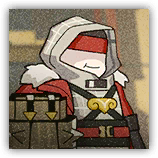
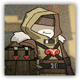

|
 |
特制的盾。同样负责防御，连阵者的盾是特制的。他们大多曾为祸一方，身材魁梧，站在那儿就有威慑力。 不接受绕后。两三个连阵者站成一排，正面就推不进去。 |
| AC 18 | 先攻 +2（12） |
| HP 75（10d8+30） | |
| 速度 20 尺 | |
| 调整 | 豁免 | 调整 | 豁免 | 调整 | 豁免 | |||||||||
|---|---|---|---|---|---|---|---|---|---|---|---|---|---|---|
| 力量 | 17 | +3 | +2 | 敏捷 | 10 | +0 | +0 | 体质 | 17 | +3 | +3 | |||
| 智力 | 12 | +1 | +1 | 感知 | 14 | +2 | +2 | 魅力 | 11 | +0 | +0 |
| 技能 运动+6，威吓+4，察觉+3 |
| 装备 特制重盾，镶甲，长锤 |
| 感官 被动察觉14 |
| 语言 通用语，炎国語 |
| CR 3（XP 700；PB +2） |
|
 |
举盾的。负责防御的山海众成员。山海众网罗了不少亡命之徒，他们身材魁梧，手持重盾，为同伙提供庇护。 挡在前面。冒矢者站在同伙前面，把箭接下来。 |
| AC 17 | 先攻 +2（12） |
| HP 60（8d8+24） | |
| 速度 20 尺 | |
| 调整 | 豁免 | 调整 | 豁免 | 调整 | 豁免 | |||||||||
|---|---|---|---|---|---|---|---|---|---|---|---|---|---|---|
| 力量 | 16 | +3 | +2 | 敏捷 | 10 | +0 | +0 | 体质 | 16 | +3 | +3 | |||
| 智力 | 11 | +0 | +0 | 感知 | 13 | +1 | +1 | 魅力 | 10 | +0 | +0 |
| 技能 运动+5，威吓+3 |
| 装备 重盾，镶甲，短锤 |
| 感官 被动察觉13 |
| 语言 通用语，炎国語 |
| CR 3（XP 700；PB +2） |